Nascent: Autonomous Self-Improving Intelligence
Brain-inspired continual learning | Deeper, smarter exploration | Flexible neural representation
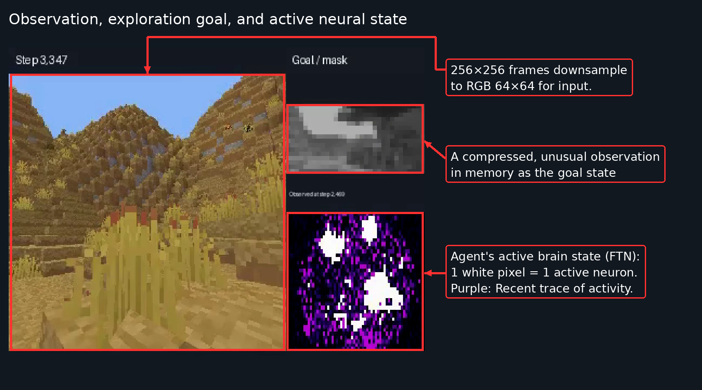
Observation, goal & FTN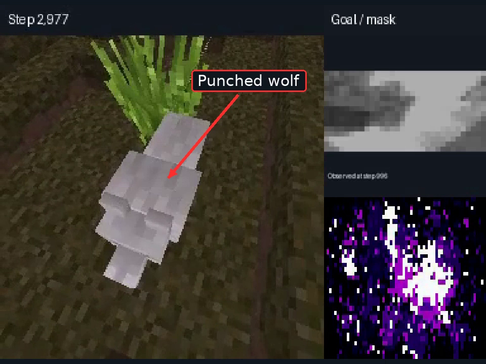
Punched wolf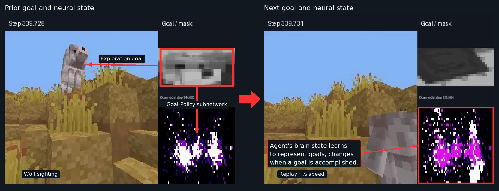
Changing goal & brain state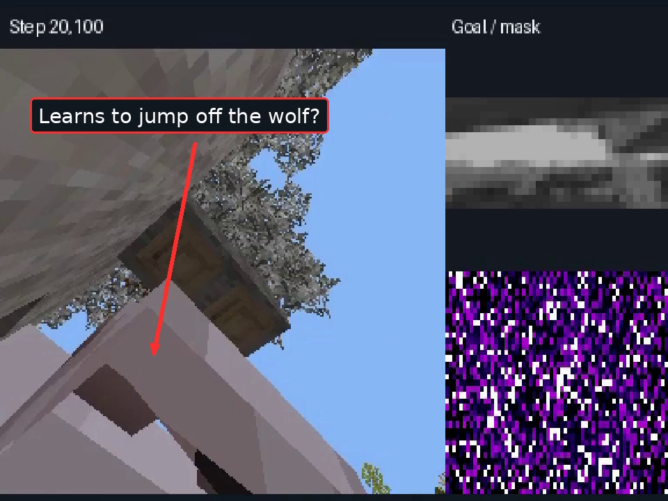
Jumping off a wolf?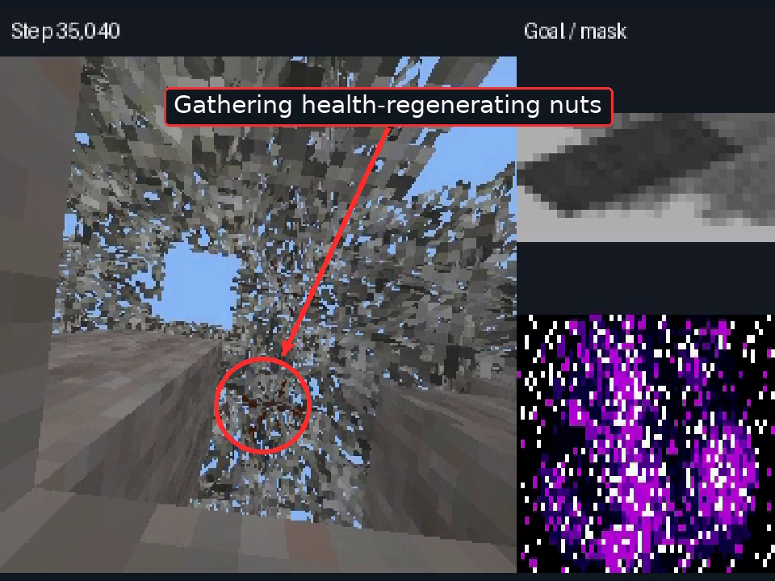
Gathering nuts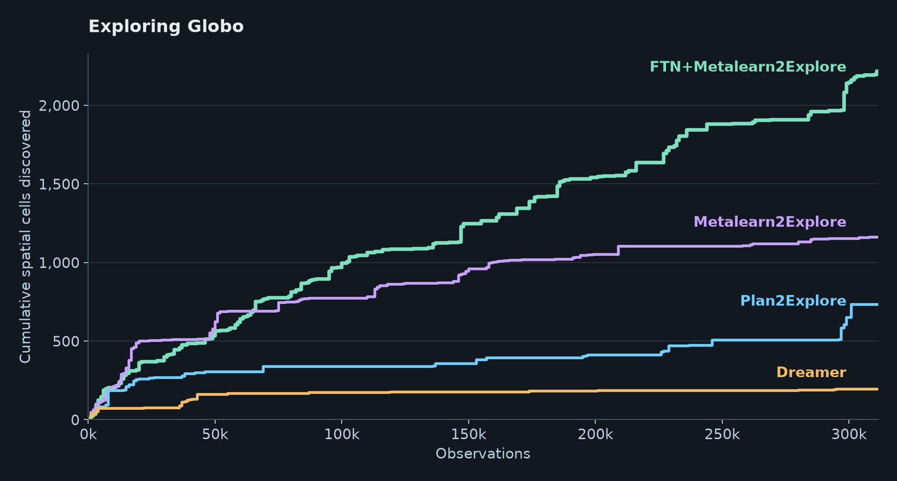
Watch above the first prototype of Nascent: Using exploration to feed continual learning, and continual learning to make exploration smarter. Nascent explored the open world of Globo 6x faster and further than DreamerV3 and Plan2Explore.
Exploring the world of Globo: results and demonstrations ↗
Summary
Real, self-scaling Artificial General Intelligence requires a fundamental shift in approach that starts with autonomous learning. Mastery of an environment requires deeply exploring the scope and mechanics of that environment and translating them into robustly retained knowledge and skills. Here, I will propose, design, and even demonstrate such an autonomous agent with emergent, native capabilities arising from a rich first-person experience. I will demonstrate techniques for highly efficient, naturalistic exploration and neocortex-inspired continual learning, both developed here at the Astera Institute to specifically target this vision of AGI. Together, these techniques will form the fundamental ingredients of a self-improving agent.
Watch above as a prototype of Nascent navigates Globo, our open world survival benchmark.
For full details, check out the papers:
Meta-Learning to Explore via Memory Density Feedback ↗
Fully Autonomous Continual Learning and Knowledge Transfer via Cortex-Inspired Neural Assemblies ↗
Problem with current AI
Current state of the art AI relies on Artificial Neural Networks (ANN). ANNs provide general learning from data, but cannot retain their solutions unless the data distribution is well represented throughout training. Reinforcement learning provides a general method of long-range credit assignment and planning, but only when a reward function is well defined and easily observed. Robust AGI can expect none of these luxuries: the world constantly changes, and reward functions are just an experimental way that we inject our own knowledge. To effectively leverage ANNs, a method of continual learning is needed that can automatically make the numerous decisions involved in neural resource allocation, protection, and updating. To exploit the generality of RL, the reward function must be internally generated to drive an intrinsic self-improvement loop.
While Large Language Model (LLM) based Agents have become extremely capable, they are not truly autonomous. Updating their network weights at-scale is a manual engineering endeavor that costs tens to hundreds of millions of dollars in data and computation. The data are invariably human artifacts ranging from web scraping to remote teleoperations. LLM training is therefore limited to these artifacts and to learning a flattened projection of the real experiences and intelligence that led to their creation.
Inadequacy of continual learning methods
Existing continual learning methods do not have the required autonomy or generality for AGI. The most well known, general-purpose continual learning algorithms only target domain shift, require task labels, and involve other manual interventions. Furthermore, they do not reflect or exploit what is known about cortical organization, which offers deep hints into the preservation of memories and skills over a lifetime.
Inadequacy in exploration methods
Exploration methods similarly all target specific aspects of training and leave major domains unaddressed. No one has found a combination of exploration drives and architectures that results in reliable self-improvement over arbitrary problem domains. Most methods predictably fail when deployed to randomized or noisy environments. Most also reduce to some structured placement of random actions instead of allowing the agent to learn more intelligent ways to explore over time. Natural, human-like exploration is a progression of increasingly sophisticated exploitations of environmental and control regularities, culminating in hypothesis testing and scientific reasoning.
Solutions for AGI
At Astera, I have found novel solutions to both of these problems: (1) a meta-learning-based exploration (M2E) and (2) cortex-inspired continual learning, called functional task networks (FTN). When investigating these new ideas, I specifically targeted Astera's goals for naturalistic, brain-like AGI, while aiming to introduce new capabilities, not just incremental performance gains.
Metalearning to Explore (M2E)
M2E introduces a concise principle with far-reaching implications for intelligence: Maximize discovery by learning the environmental regularities and behaviors that maximize novelty in real-time. When the environment is unpredictable, M2E leverages its internal compasses to make immediate progress.
M2E uses internal, real-time feedback about what is new to adjust its exploration strategy and goals. It remembers many different frontiers of its search paths and plans offline ways to return to them. This combination of tactics and planning means that M2E explores faster as it makes progress.
Blind mazes: An unrealistically hard challenge
Watch below as M2E completely explores blind mazes in continuous action space, reaching nearly 100% coverage in under 100,000 steps. This environment was designed to be a strict, challenging exploration problem. In each maze, the agent only recieves its own coordinates, so it has to infer the presence of each wall. In the fixed maze, each episode is 100 steps and starts in the center. Its online, running sense of familiarity with each coordinate allows it to make progress rapidly in this test. It also handles variations of the maze designed to thwart other exploration algorithms, including randomized walls and large mazes with no reset point.
These experiments establish that M2E is radically more efficient than Go-Explore and other state of the art algorithms, and it is applicable to far more environments and problem classes.
Globo: An open world
In Globo, M2E beats DreamerV3 with novelty rewards and its more advanced Plan2Explore (P2E) spinoff. Dreamer and P2E rely on model-based rewards, so their initial progress is blocked by model training, and they are prone to becoming addicted to noise and other uninteresting sources of randomness (the "Noisy TV" problem).
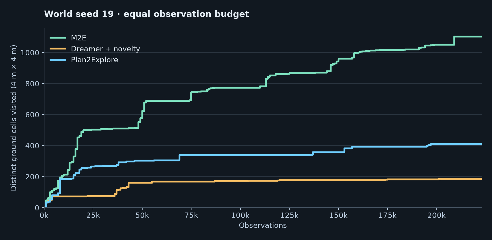
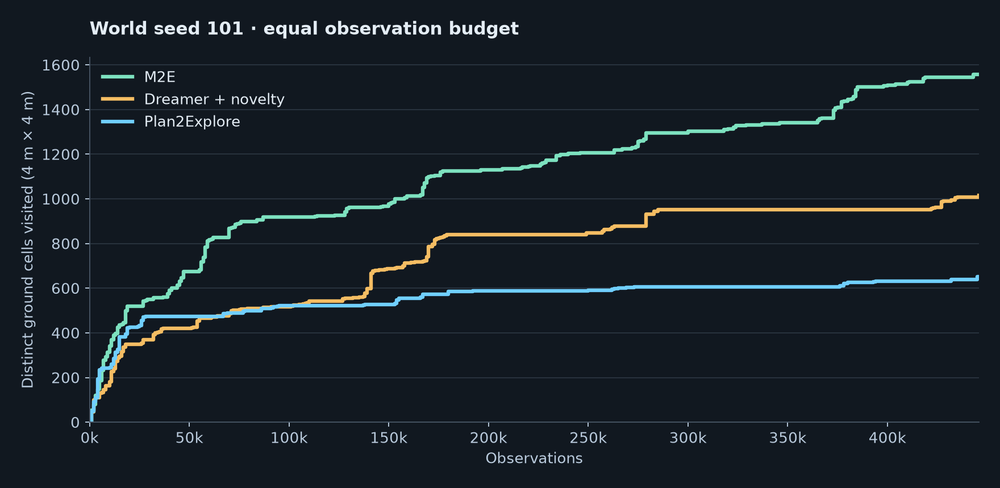
These gains come from two major sources: exploring earlier and learning to explore smarter along the way. This is possible because M2E uses memory density as a model-free novelty metric. As such, it is entirely compatible with additional model-based novelty metrics, including Dreamer's, so the methods compared here are complementary, potentially offering different benefits at different stages of development.
Functional Task Networks (FTN)
To solve continual learning, FTN uses insights about cortical connectivity, cellular complexity, population firing statistics, and attractor dynamics. How does the brain perform continual learning so effortlessly, and what if we designed our neural networks more like cortical tissue? What if each cell were a complex, trainable unit, and populations of such cells rapidly self-organized to meet the needs of each situation?
FTN represents different learned functions through distributed, overlapping neural assemblies. These assemblies retain distinct resources while also sharing transferable components. FTN therefore allows a network to represent multiple, conflicting models or hypotheses of the data, each observed separately in time.
FTN uses an optimization outer-loop to autonomously recruit neural assembllies. When the data are familiar, it recruits previous, well-trained solutions. In unfamiliar situations, it recombines and adapts learned components to develop new solutions while protecting previous learning from interference. This flexibility comes from representing each task across overlapping neural assemblies that can be preserved, reactivated, and recombined- a design inspired by the brain’s distributed organization.
Watch a real-time visualization of FTN training on 3 classification tasks, separated in time, without forgetting:
In the above clip, the left shows the data-generating function. The center shows the data samples superimposed on the network's learned solution. The right shows which "neurons" are active in the network, reconfiguring into distinct, trainable populations for each task.
Retaining earlier solutions and preparing for new ones
To better demonstrate the benefit of FTN, I trained a standard neural network on 16 tasks in sequence. Plotting the accuracy of each task over time (left panel, below), as each new task is introduced, shows that nothing is retained (lower triangle of the matrix), and nothing generalizes to unseen tasks (upper triangle). When FTN is used (right panel), previously seen tasks are retained without loss and unseen tasks gradually become easier to approximate with the available neurons. The task-boundary detection, retention, recall, and forward transfer are all handled by the self-organizing behavior of the neural population. There is no comparable set of mechanisms in standard ANNs, and no comparable autonomy to other available continual learning strategies.
Ordinary sequential learning
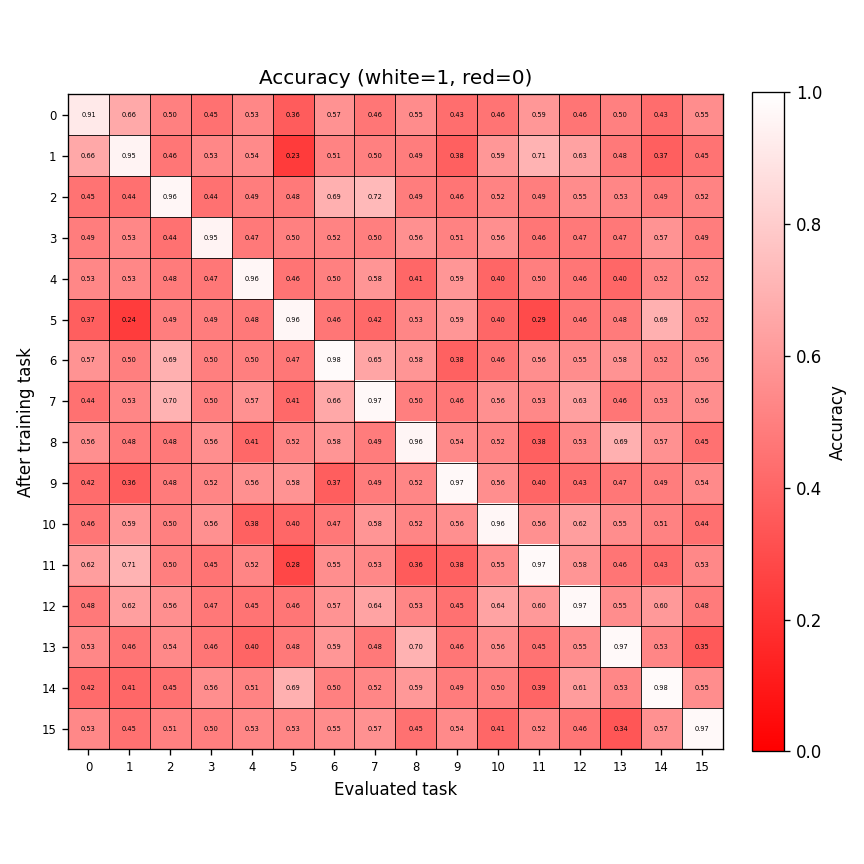
Functional Task Networks
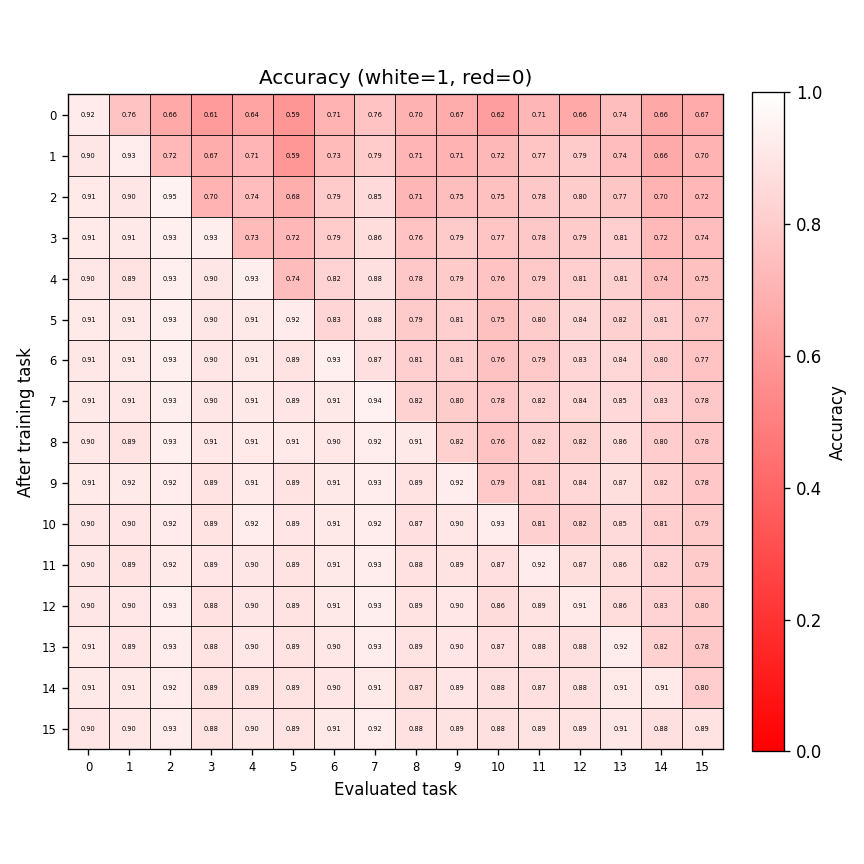
Baseline comparisons
Most continual learning methods are not fairly comparable to FTN because they either or all of (1) fail to implement any autonomy (2) address concept shift, i.e., changing output mappings over time (3) do not perform forward and/or backward knowledge transfer, (4) require task labels or other human-provided information or control. I compared FTN against the closest popular methods from the literature: Supermasks in Superposition (SupSup), Progressive Nets, and the standard replay buffer. FTN can perform the same roles of each of these at least as well, but each fails on some criterion that FTN was designed to meet.
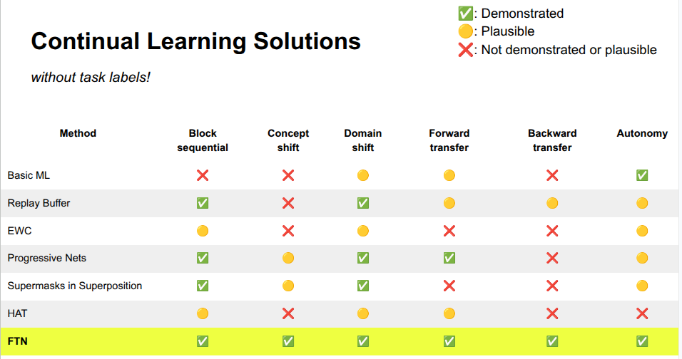
SupSup is similar but only allows selection of fixed random features, so its training depth and expressivity are limited, and there is no learning that could be transferred forward or backward. Progressive nets provides forward, but not backward transfer, and require task labels or manual control at task boundaries. Replay buffers remain a simple and autonomous but expensive option, and they offer no way to handle concept shift. If more than one mutually exclusive solution (i.e., competing theories, hypotheses) are learnable from the data, their gradients will cancel out and the agent will learn neither. FTN was made to supply these missing capabilities, not for incremental improvement.
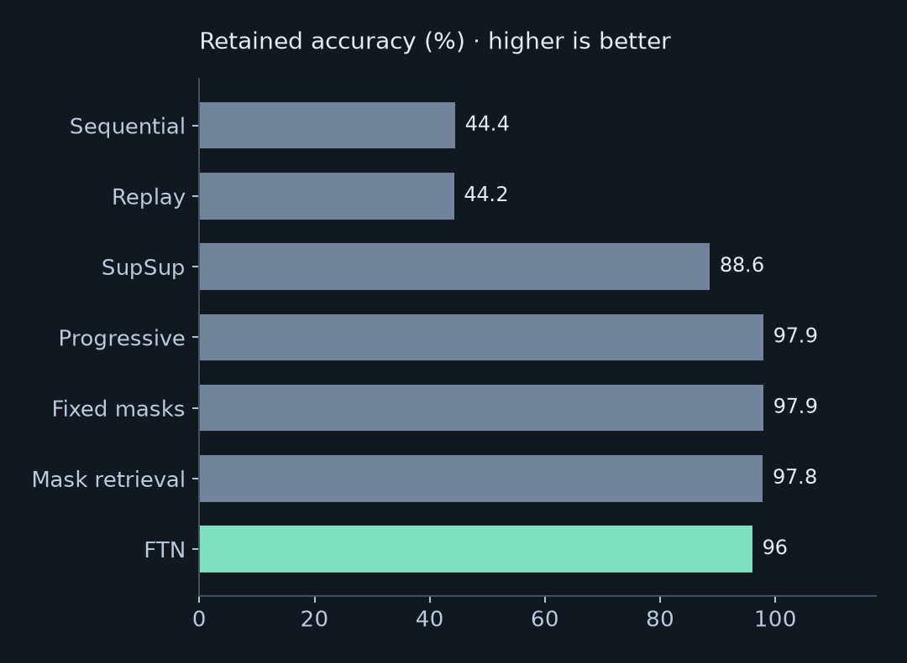
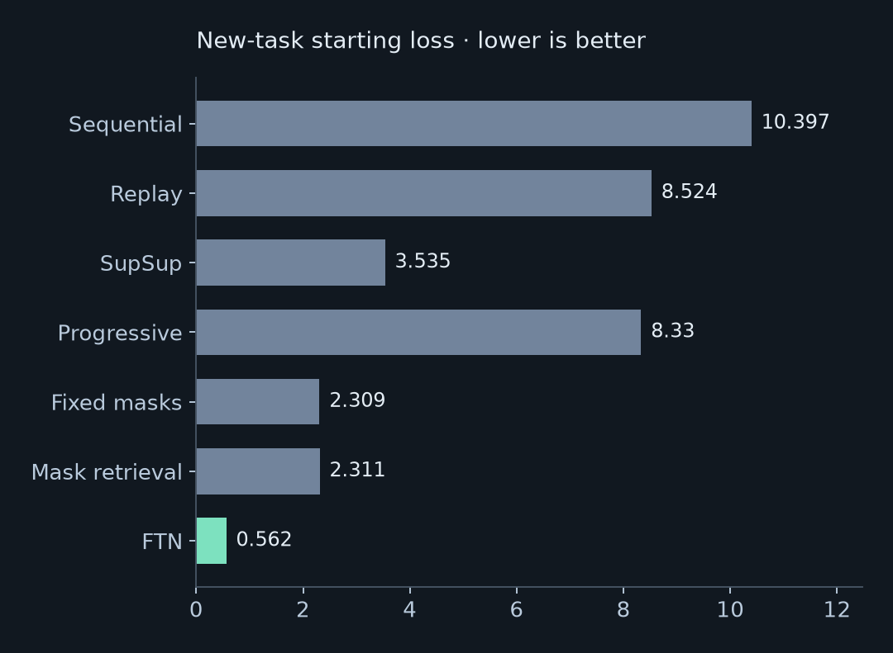
Backward transfer asks whether learning later tasks helps or harms earlier ones. In a six-task language-model experiment, FTN-LoRA improves earlier-task accuracy by an average of 19 percentage points. Ordinary sequential LoRA loses 47 points, and LoRA with replay loses 9. The network can use later experience to improve what it learned before.
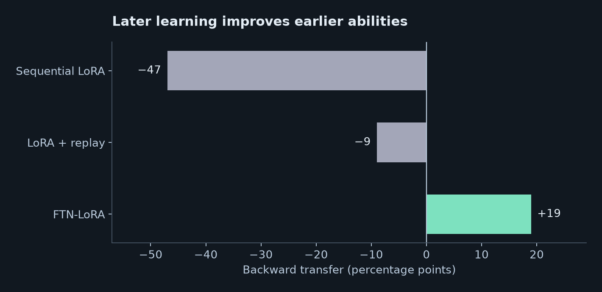
Both M2E and FTN were designed to be assumption-free and "hands off": in M2E, the environment may be predictable or random, continuous or discrete, repetitious or not. With FTN, new tasks can flow through the network without any identifying labels, may represent contradictory solutions, or may represent complementary solutions over disjoint spaces.
Scalability: FTN-LoRA for Diffusion Transformers and LLMs.
There are no constraints on how either M2E or FTN can be applied to ANNs generally. Generative modeling - transformers, diffusion, all state-of-the-art techniques are applicable. By making each neuron in FTN a Low Rank Adapter (LoRA), any weight matrices from any model can be turned into an autonomously recombinant population. I demonstrate this in two cases: continual pre-and-post-training of LLMs and continual post-training of a generative image Diffusion Transformer.
To test continual LLM pretraining, I compared Transformer+FTN against a standard Transformer, TTT-E2E, and Transformer MoE over 5,000 WikiText updates followed by 5,000 CodeParrot updates. The MoE and FTN models were parameter matched on both active and total parameters. The FTN curve shows the replay-free run evaluated with its repaired input-conditioned mask. As with the other application domains, forgetting is nearly eliminated here. FTN also shows a better head-start than the Transformer or MoE, similar in effect to TTT-E2E's adaptation, prior to training codeparrot.
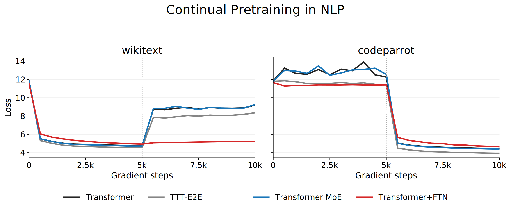
The results in image generation with Diffusion Transformers are also very encouraging. FTN-LoRA remembers 11 new, niche image domains trained sequentially with only 5% of their data retained. The image domains include several faces, distinct objects, and image filters, testing various levels of routing difficulty. Faces propose a challenging problem: the differentiating signals are minor facial features, set against uninformative backgrounds and clothing. In this case, the 5% data budget was sufficient to repair generative solutions at the overlap between populations. An alternative version with no replay whatsoever also performed well.
Nascent: Early Results
The first Nascent prototype combines M2E's drive to explore with FTN's ability to retain and reuse what it learns. In Globo, these agents receive no external rewards or destinations. Across six runs per model, M2E and FTN-M2E explore far more widely than Plan2Explore (P2E). FTN-M2E pulls ahead of M2E later in spatial exploration and discovers more distinct achievements, suggesting that continual learning becomes increasingly useful as experience accumulates.


Lines show means; shading shows the full range. Six matched learner seeds per model, all in world 19: Phase 4 M2E and FTN-M2E, and Phase 5 P2E runs 1–6. All curves end at 341,000 observations, the shortest included Plan2Explore run, with six runs contributing per model throughout.
The difference is visible in where the agents go. In the long-run maps below, DreamerV3 and P2E often remain near trenches or follow narrow paths across the landscape. M2E and FTN-M2E spread through a much broader area, finding routes into the dense forest and returning to explore beyond familiar ground. These are early results, but they show the intended relationship between exploration and learning: retained experience helps the agent discover more. See the Globo results in detail.


These example runs have different lengths: M2E and FTN-M2E explored farther despite taking substantially fewer steps—FTN-M2E used only a little over half as many as DreamerV3. All maps show world 19 on the same terrain and scale, with observation counts labeled above. Yellow–red indicates repeated visits. Click any figure to enlarge.
Plan
I will develop Nascent, an agent with exploration and continual learning ability, and deploy it to naturalistic, open-world environments (Globo, Minecraft, real robots). The agents will run for long lifetimes and accumulate knowledge and innovations as a result of their own internal drive toward discovery. The central goal of this project is to perfect the feedback loop between exploration and learning that causes flexible representation and reasoning to naturally emerge. Nascent will be compatible with state-of-the-art foundation models, planning, and reasoning systems where applicable and necessary, but it will avoid becoming bottlenecked on the specific limitations of those existing techniques in favor of emergent, autonomous, and brain-like neural solutions.
I aim to demonstrate emergent scientific behavior and reasoning in an autonomous, embodied agent by 2028. In 2027, I will focus on the development flywheel, pushing capabilities forward while building a team. By then, I will have established the autonomous foundations: an agent that trains and scales itself. Q1 will focus on accelerating the prototype by including complementary novelty rewards and interfacing foundation models. Q2 will focus on obtaining achievements on Globo, bridging success to other domains, and charting a path toward emergent science. Q3 aims to further hasten its technological discoveries, including introducing multi-agent cooperation. Q4 will focus on demonstrating primitive reasoning behaviors like hypothesis testing and rule induction.
In short, the agent's self-improvement loop is the foundational framework. Subsequent work just makes its job easier and faster, including improvements to its ability to represent, plan, and even communicate with other agents and humans.
Previously
-
Summer 2024
Released M2E paper with maze experiments showing it beats Go-Explore.
-
September 2025
First positive findings on early FTN prototypes.
-
June 2026
Presented complete FTN results with continual learning in:
- Classification
- Reinforcement learning
- Behavior cloning (robotics)
- Simple NLP challenges
-
October 2026 Present
Milestones:
- Scalable variational-Bayes FTN formulation: Image Diffusion, LLMs
- M2E beats Plan2Explore on Globo
- FTN beats TTT-E2E on continual learning
-
December 2026 Foundations
First set of complete FTN-M2E prototypes on Globo demonstrating reliable improvement over M2E due to FTN.
- Simple policy-FTN architectures (current)
- Model-free planning via a latent environment graph and options
- Incorporating DreamerV3 model’s novelty signal
Establish consistent Globo benchmarks and scoreboard: achievements, spatial coverage, survival times.
Hiring
2027: The capabilities flywheel
-
March 2027 Q1 · Acceleration
Milestones:
- Clear utilization of multiple novelty signals: Density, prediction error, reconstruction error
- Integration of external rewards
- Efficient world-model training
- ViT / video DiT integration
- VLM-assisted exploration—using embeddings for context and novelty
Hiring
-
June 2027 Q2 · Achievements
Milestones:
- Advanced skills: tool usage, block construction
- Advanced survival: egg laying
- Improved survival times
Outline paths to higher novelty: more abstract novel achievements.
Outline path to emergent science.
Hiring
-
September 2027 Q3 · COOPERATION
Milestones:
- First steps executing on path to higher forms of novelty and emergent science
- Multi-agent experiments: cultural evolution, social learning
- Speed up tech discovery via multiple interacting agents
- Inter-agent communication: Native vs LLM-assisted
-
December 2027 Q4 · SCIENCE
Milestones:
- Advanced agent testing hypotheses, learning rules and theories of its open world
-
2028 and beyond Expansion and safety
- Expand applications
- Plans for managing safety
- Interpretability
Resources and Personnel
Hardware
This project will require a sizable compute and token budget. Self-development and continual learning means agents will eventually run continuously for weeks to months. Exploration is also inherently a highly variable process. To reliably establish an improvement to performance, we will need to perform several long runs of competing models over many seeds (e.g., 6 seeds reveal reliable improvement of FTN-M2E over M2E). For a point of reference, the experiments done for this proposal used no more than 12 GPUs at any point.
Personnel
AI coding has been indispensable for moving quickly and incorporating modules. Interfacing the original Dreamer code with a new environment used to take days. Now it takes 5 minutes. The role of humans has therefore moved away from coding and toward the insightful thinking that AI coders still cannot do.
My priorities for building a team thus include researchers that can overcome theoretical obstacles, thinking broadly but practically about the core uncertainties of the project. In particular, FTN is based on a broad picture of how many cortical motifs likely interact, translated into machine learning. That is the level of translation that I will look for in candidates. Second, I may need engineers with specific industry domain experience, e.g., post-training language and video models. Bleeding-edge areas of machine learning in the industry still require human expertise over agentic coding. In 2027, I aim to hire a minimum of 2, maximum of 6 people. A team of 3 or 4 can move very quickly and coordinate tightly, with a couple extra spots for headroom as the project expands in its first year.
Contributions to Technology
This proposal concerns a form of intelligent, self-improving autonomy that is simply not present in current technology. As an autonomous AGI, Nascent can grow to participate in, contribute to, and change society in ways that humans cannot alone. The agent will be capable of pursuing its own intrinsic scientific goals, invent technologies, and propose theories that are not just statistical interpolations of existing literature. Rather, science and engineering are the natural extensions of its fundamental exploration and learning design.
Successful demonstration of this AGI approach itself will represent a leap in capabilities and opportunities. If the agent can master natural open-world environments, then it can be extended to robotics, eventually eliminating the need for massive, contrived human datasets to every possible motor skill. We can also revise the role of LLMs in broader agentic systems, grounding language representation in multimodal first-person experience, motor control, and self-modeling.
Contributions to Neuroscience
FTN is based closely on several brain mechanisms and serves as a testable theory of continual learning and distributed representation in the neocortex. FTN provides a principle for network self-assembly at the levels of dendrites, neurons, and cortical columns. The FTN-LoRA architecture in particular resembles dendritic redundancy and selection. Spatial consolidation in FTN results in "mesoscale functional units" or even cortical columns, strongly resembling those seen in mammals corresponding to different skilled motor behaviors.
M2E stands to contribute to our theories of human curiosity and exploration by demonstrating extremely fast exploration progress and the open-ended learning of exploration skills. When humans do not know what to do in novel situations, we do not begin taking random actions and we do not probe for every possible uninteresting fact. Rather, we take routes that provide the most useful information that allows us to learn the fastest. This is the general intuition behind M2E: not just training the network to do the next novel thing, but training it to skillfully seek out the most efficient routes to the largest discoveries.
Safety and experimental control
Any successful AGI program must anticipate the consequences of increasingly autonomous learning and action. Grounding an agent in first-person experience does not necessarily make it more trustworthy. Specified intrinsic drives do not guarantee that its behavior will serve human goals. The relationship between what we reward, what the agent learns, and what it actually does must remain an explicit object of study.
Current experiments take place in simulated worlds with a limited set of available actions. Runs are monitored, their behavior and progress are logged, and checkpoints allow learning to be paused and resumed. I will keep expansion into external tools, broader environments, or physical systems subject to separate capability and safety evaluations.
As the agent acquires new capabilities, the program must develop more specific tests for unwanted behavior and more specific conditions for intervention. Resource limits and human oversight are useful controls, but neither is a complete safety argument. Further stages of the research will require correspondingly stronger evidence and safeguards.